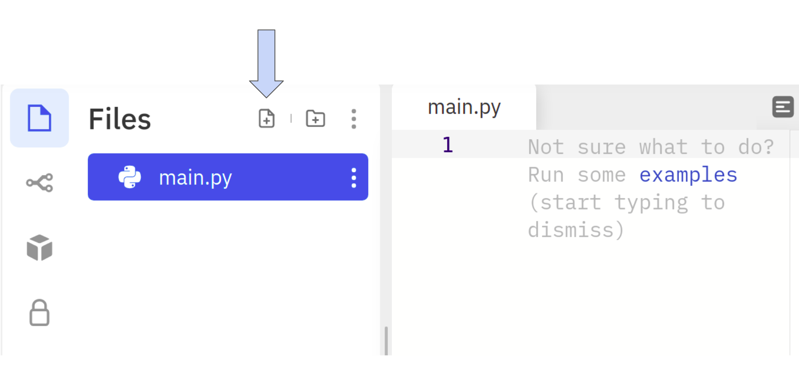
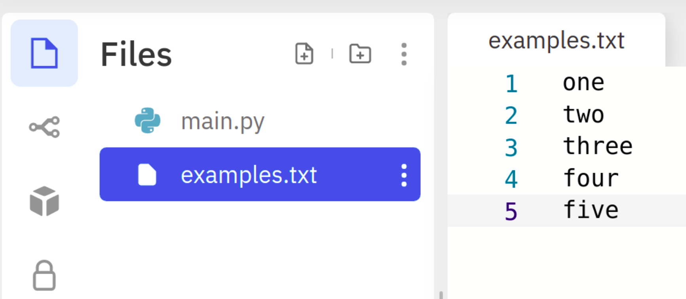
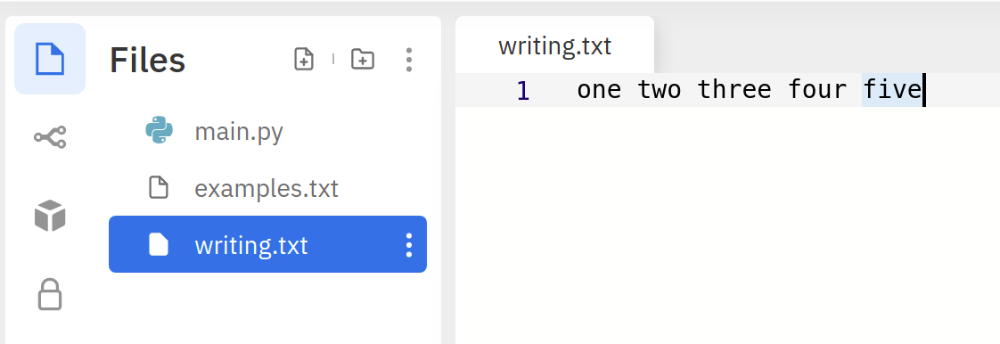
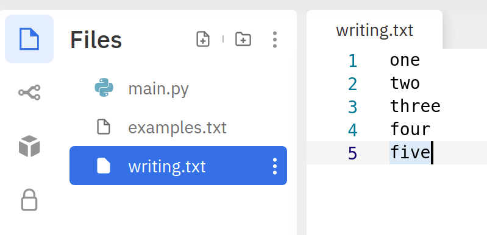

Lesson-7.2
File Handling
Creating a file in Replit
Let us use Replit and use the Add File button to create a file.

Each file should be given a name. Let us call our file examples.txt. Now, we shall add the following lines to the file:
one
two
three
four
fiveAfter creating the file, this is how it should look in Replit when we click on examples.txt:

examples.txt is called a text file. We can identify this from the extension — txt that comes at the end of files. Don’t worry too much about the extension. It is enough if you know that different files come with different extensions. In fact, main.py is itself a file with py as the extension. This is why it gets listed along with examples.txt under the Files tab in Replit.
Opening and reading from a file
Now, it is time to open the file and print the contents on to the console. For this, we head to main.py and type the following lines.
#!py open() is a built-in function in Python that accepts two arguments:
- file name
- mode
The first argument is the file name, which is #!py 'examples.txt' in our case. The second argument corresponds to the mode in which we want to process the file. In this case, we want to read the file. So, we open the file in read-mode. The single character #!py 'r' is used to denote this mode. Notice that both the arguments passed to #!py open() are strings.
The #!py open() function returns a file object. Do no worry about the terminology for now. We will discuss it in detail in the next lesson. For now, it is enough to know that the #!py open() function returns a file object that we have called f in our code.
In lines 2-3, we loop through each line in the file and print it. As simple as that. Finally, in line 4, we close the file using the method #!py close(). It is a good practice to close the file once we are done with processing it. Let us now see the output at the end of execution of this code block:
one
two
three
four
fiveNow that doesn’t seem right. We have all the contents of the file, but for whatever reason, there is an extra line between successive lines in the file. To suppress these new lines, we have to modify our print function slightly:
f = open('examples.txt', 'r')
for line in f:
print(line, end = '') # there is NO SPACE between the quotes
f.close()Note the change in line 3. By default, #!py print() appends a newline character (#!py '\n') at the end of whatever it is printing. By using #!py end = '', we are just appending the empty string. Therefore, the extra line that was appearing in the output will no longer bother us when we execute the code we have just written:
one
two
three
four
fiveOpening and writing to a file
Consider the following code-block:
f = open('writing.txt', 'w')
f.write('one ')
f.write('two ')
f.write('three ')
f.write('four ')
f.write('five')
f.close()Here, we have opened the file in write mode. When this code is executed, it creates a file in Replit called writing.txt.

We have used what is called the #!py write() method to write to the file. We pass the content we wish to write as a string argument to the method. Notice that, even though we have used the #!py write() method to write five different words on five lines in the code, all of them get written to the same line in the file. The way to tell the file object to go to a new line is using the #!py '\n' character. Let us now, try the following piece of code:
f = open('writing.txt', 'w')
f.write('one')
f.write('\n')
f.write('two')
f.write('\n')
f.write('three')
f.write('\n')
f.write('four')
f.write('\n')
f.write('five')
f.close()
A better way of achieving this in fewer lines of code is to append the \n character to every line of the file we wish to write:
f = open('writing.txt', 'w')
f.write('one\n')
f.write('two\n')
f.write('three\n')
f.write('four\n')
f.write('five')
f.close()This results in the same file but with fewer lines of code! In the next lesson, we will take a closer look at the idea of a file object.
Notice that we didn’t add a #!py '\n' after five. Why do you think that is the case? Try running the code with #!py '\n' after five.